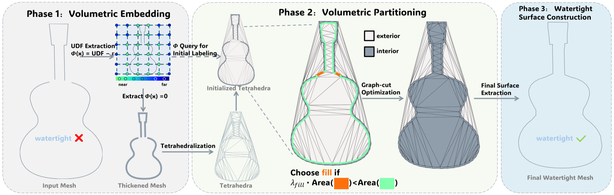
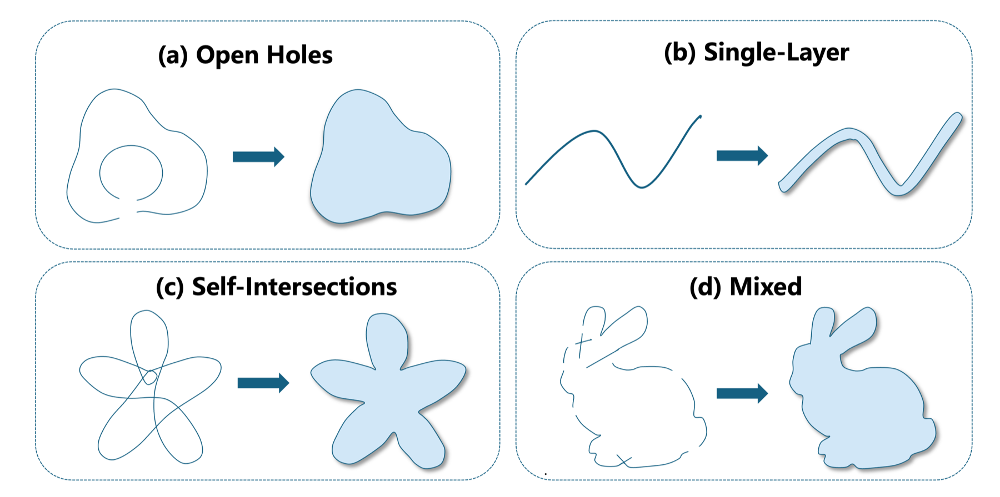

CelloScan
TL;DR
CelloCut treats watertight remeshing as volumetric partitioning, producing compact, strictly watertight solids from defective meshes with holes, self-intersections, and single-layer structures.
Abstract
Watertight remeshing aims to recover a surface that induces a globally consistent interior-exterior partition of 3D space. However, for meshes with complex topology, single-layer structures, or large missing regions, inferring such a partition from local surface geometry is inherently ambiguous.
CelloCut formulates watertight conversion as a binary labeling problem over a Delaunay tetrahedral partition of space. It combines one-sided constraints that preserve proxy-supported interior evidence with weighted interface penalties that discourage unsupported newly introduced boundaries. By computing a globally consistent volumetric partition, CelloCut guarantees a strictly watertight output by construction and suppresses pseudo-watertight artifacts such as double shells.
Results
CelloCut produces watertight and geometrically faithful reconstructions across severe topological defects and challenging missing-geometry cases.
CelloFill
Completion Benchmark
Method
We introduce CelloCut, a constructive watertight remeshing framework for defective meshes whose surfaces no longer define a reliable solid. Instead of repairing holes, intersections, and non-manifold configurations with local surface operations, CelloCut asks a volumetric question: which tetrahedral cells should be interpreted as interior, and which should remain exterior, so that the resulting boundary forms a compact watertight solid.
CelloCut first builds a conservative thickened proxy from the input by extracting an unsigned distance field and offsetting it by a small thickness. The proxy is tetrahedralized to produce an adaptive cell complex around the shape, and each cell receives an initial interior or exterior label from the thickened evidence. A graph-cut optimization then resolves ambiguous regions under one-sided constraints and fill-aware interface penalties, so unsupported new boundaries are introduced only when they produce a simpler and more globally consistent completion. The final mesh is extracted from the optimized cell partition and is watertight by construction.
Pipeline
From Defective Surface to Volumetric Cell Cut
The method separates topology resolution from final surface extraction: a volumetric embedding supplies stable evidence, a discrete partitioning step chooses a globally consistent solid, and the final boundary is reconstructed from that partition.

Problem Setting
Defects That Break Local Surface Repair
Open holes, single-layer sheets, self-intersections, and mixed corruptions make local inside-outside inference unreliable. In these cases, exact surface restoration is often underdetermined; the practical goal is to select a conservative solid interpretation that is compact, manifold, and volumetrically consistent.
This is why CelloCut operates on cells rather than directly on triangles: ambiguous boundary evidence can be resolved by a global cut over space, while reliable proxy-supported interiors are preserved.

Citation
@article{yang2026cellocut,
title = {CelloCut: Constructive Watertight Remeshing via Tetrahedral Cell Cuts},
author = {Yang, Xuan and Zeng, Yuhang and Fang, Dinglong and Tang, Guochuan and Jiang, Jiaju and Li, Ben and Zhou, Wei and Long, Xiao-Xiao and Lin, Cheng},
journal = {arXiv preprint arXiv:XXXX.XXXXX},
year = {2026}
}